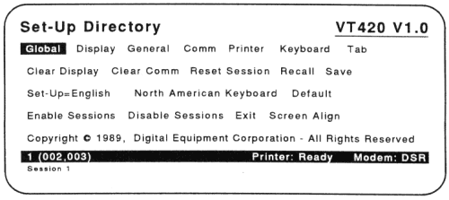
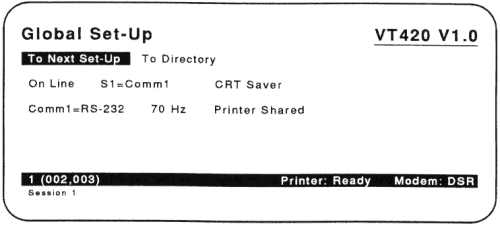
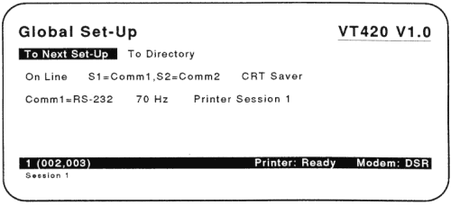
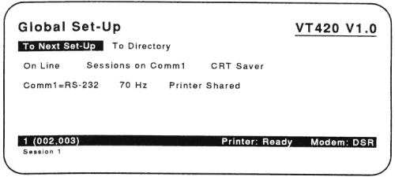
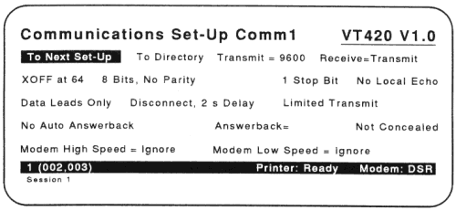
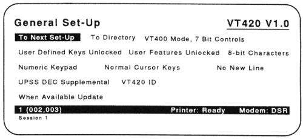

After you install your VT420, you must set some of the terminal's operating features to
This chapter provides step-by-step instructions. All other VT420 operating features are already set to a factory-default setting that works with most Digital systems.
You may have to set some features to match your host system. For example, the VT420 must use the same communication baud rate as your host system.
Also, the terminal ID must match the software running on the host. If
the message unknown terminal type appears on the screen, you must set
the correct terminal ID. This chapter provides the instructions to
The VT420 has a series of set-up screens that list the terminal's operating features. You can examine and change feature settings from the keyboard. The procedures in this chapter explain how to use some set-up screens. If you want to know more about set-up, or if you want to set a feature not covered here, see Chapter 5.
The VT420 has keyboard models for a number of dialects. The initial
setting for the keyboard dialect feature is North American Keyboard.
If you have the North American/United Kingdom keyboard, you can skip this procedure, unless you want to use the British dialect. If you have any other keyboard model, you must complete this procedure to select the correct keyboard dialect.
Global field.
 |
North American
Keyboard field.Save
field.Two Sessions: If you plan to run two sessions, you must select the keyboard dialect for each session independently. To select the keyboard dialect for the second session, first set-up the VT420 for two sessions (next section). Then press the F4 (Session) key and repeat the procedure above.
The VT420 has two communication (Comm) ports that let you run one or two sessions -- the Comm1 port and the Comm2 port. These ports provide the cable connections to your host system(s). To set up the terminal correctly, you must know
If you are unsure, see the "Cable Connections" section in Chapter 2. After you identify the port(s) and cables in use, go to the section that matches your installation.
Remember, the terminal must use a separate cable for each session, unless your system has SSU software or a DECserver 200 or DECserver 300 terminal server. SSU lets you run two sessions over one cable, and these terminal servers have SSU software.
The primary Comm1 port has two connectors -- a 25-pin, RS-232 connector and a 6-pin DEC-423 connector. The secondary Comm2 port has a 6-pin, DEC-423 connector. You can also use the Comm2 port to connect a local printer to the VT420.
You only need one communication cable to run one session. You can connect the cable to either of the connectors on the primary Comm1 port -- 25-pin RS-232 or 6-pin DEC-423. After you connect your cable, you must check the settings on the Global Set-Up screen.
Global field. |
S1=Comm1 (default)
S1=Comm1,S2=Comm2
S1=Comm2,S1=Comm1
Sessions on Comm1
The correct setting for your setup is the default setting of S1=Comm1.
If the setting is correct, go on to the next step.
If the setting is incorrect:
S1=Comm1 setting appears.Comm1=RS-232
Comm1=DEC-423
The setting should match the connector you are using. If the setting is correct, go to the next step.
If the setting is incorrect:
If you did not change any settings, you can press F3 (Set-Up) to leave set-up.
To Directory field.Global field.Save field.Done message appears at the bottom of the screen.When you use two communication cables, you connect one cable to the terminal's Comm1 port and one cable to the Comm2 port. After you connect your cables, you must change some settings on the Global Set-Up screen to match your cable connections.
Global field. |
S1=Comm1 (default)
S1=Comm1,S2=Comm2
S1=Comm2,S2=Comm1
Sessions on Comm1
To run two sessions over two communication cables, you can use one of two settings:
S1=Comm1,S2=Comm2 |
Assigns session 1 to the Comm1 port and session 2 to the Comm2 port. |
S1=Comm2,S2=Comm1 |
Assigns session 1 to the Comm2 port and session 2 to the Comm1 port. |
NOTE: When you connect your VT420 to two different systems, the VT420 always opens session 1 first. You should match session 1 with the computer you use most often.
If the setting is correct, go on to the next step.
If the setting is incorrect:
Comm1=RS-232
Comm1=DEC-423
The setting should match the connector you are using. If the setting is correct, go to the next step.
If the setting is incorrect:
If you did not change any settings, you can press F3 (Set-Up) to leave set-up.
After you select the correct settings, use the arrow keys to move to
the To Directory field.
Save field.Done message appears at the bottom of the screen.When you use two cables to run two sessions, you must set the baud rate for each session independently. See "Selecting the Correct Baud Rate" later in this chapter.
Chapter 7 describes how to use two sessions.
If your host system has Digital's SSU software, the VT420 can run two sessions over one communication cable. Your system manager can tell you if your host system has SSU software.
Connect the communication cable to either connector on the Comm1 port -- the 25-pin, RS-232 connector or the 6-pin, DEC-423 connector. After you connect the cable, change the settings on the Global Set-Up screen to match your cable connection.
Global field. |
S1=Comm1 (default)
S1=Comm1,S2=Comm2
S1=Comm2,S2=Comm1
Sessions on Comm1
To assign both sessions to the Comm1 port, you use the Sessions on
Comm1 setting.
If the setting is correct, go on to the next step.
If the setting is incorrect:
Sessions on Comm1 setting appears.Comm1=RS-232
Comm1=DEC-423
The setting should match the connector you are using. If the setting is correct, go to the next step.
If the setting is incorrect:
If you did not change any settings, you can press F3 (Set-Up) to leave set-up.
After you select the correct settings, use the arrow keys to move to
the To Directory field.
Save field.Done message appears at the bottom of the screen.Chapter 7 describes how to use two sessions.
The VT420 is initially set to a baud rate of 9600. This setting works with most Digital systems. The baud rate setting must match the baud rate of your host system. If you are unsure what baud rate your host system uses, ask your system operator or system manager.
To set the baud rate, you use the transmit = and receive = features on the Communications Set-Up screen.
Global field.Comm field. |
Transmit = field.Transmit = field is initially set to 9600. You should use a setting
that matches your host system. There are eight possible settings.
Use the Enter key to scroll through the settings.
NOTE: Next to the transmit = feature is the receive = feature. Most
systems use the same speed to transmit and receive. The
initial setting for receive = is Receive=Transmit, so the receive
speed automatically changes to match the transmit speed you
select.
To Directory field.Save field.Done message appears at the bottom of the screen.If you plan to run two sessions with two communication cables, you must set the baud rate for each session independently. To set the baud rate for the second session, first set up the VT420 for two sessions ("Setting Up for Two Sessions (Two Cables)"). After you complete all the steps in that section, press the F4 (Session) key and repeat all the steps in this section.
VT series text terminals are designed to identify themselves to the host
software upon request, so the software can automatically recognize the
terminal's operating features. If your software has not been updated
recently, it may not recognize the VT420 ID response. For example, if
the messsage unknown terminal type appears on the screen, you should
change the terminal ID feature as follows:
Global field.General field. |
VT420 ID field.
Use the Enter key to scroll to the VT320 ID settings.
To Directory field.Save field.Done message appears at the bottom of the screen.